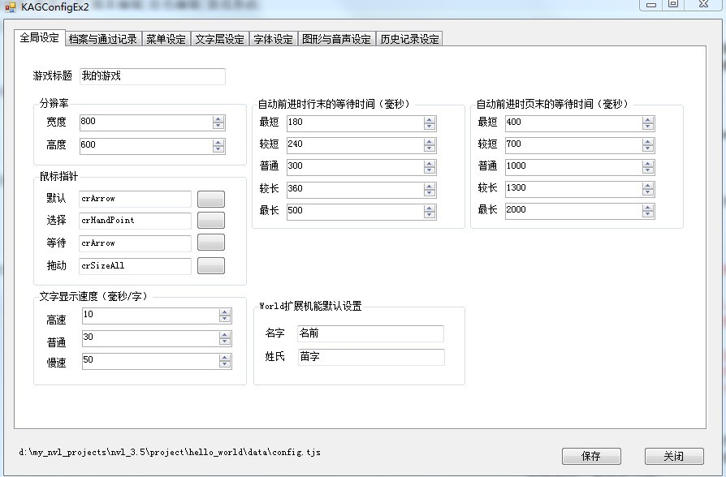

修改游戏基本设定
在已经调整了对话框的情况下，是否会觉得白底的对话框和黑底的姓名框，需要配上和原来不同的颜色和文字效果呢。
这时候就轮到Config.tjs上场了。
Config.tjs是吉里吉里/KAG的基本设定文件，包含了大量可以调整的细节。
不过Config.tjs所记录的只是一个默认设置，大部分功能也可以在后来的脚本里修改。
但对于游戏里随时都要用到的东西，例如说字体的默认颜色外观等等，直接修改Config.tjs里的设置会更简单。
总之先来看一下THE NVL Maker为Config.tjs搭配的图形化编辑工具 。
。
在“界面设定”分页里，点击“Config.tjs”即可打开这个工具。
无法正常执行的情况下，请参考下载运行篇的说明，安装必备框架或更换版本。
KAGConfigEX2.exe界面
可以设置的内容包括以下部分：
- 全局设定
- 档案与通过记录
- 菜单设定
- 文字层设定
- 字体设定
- 图形与音声设定
- 历史记录设定
具体每个部分的详细功能，会在后面的独立教程Config.tjs里讲述，这里仅对如何修改文字样式进行说明。
字体设定
点下“字体设定”分页以后，可以看到如下图的界面。
修改字体、颜色、描边/阴影（请注意描边和阴影同时只能存在一个），文字行间距、字间距等等。
这些应该很容易理解。
需要注意的是“预渲染文字”和“注音文字”两个部分。
预渲染文字是指图形字体包，让游戏可以在任何语言环境下正常显示中文指定字体，通常到打包的时候再设定也来得及。
使用方法可以查看后面的教程“预渲染文字（自定义字体）设定”。
注音文字是日文游戏里偶尔会使用到的功能，例如在特殊的名词上方标记假名。当然你也可以用它来标记拼音。
修改字体、颜色、描边/阴影
根据对话框的风格，将默认字体修改为你喜欢的字体，这里使用的范例是“文泉驿微米黑”，这是一款不错的开源字体。^ ^
接下来将颜色从白色修改为黑色。并去掉描边效果。
修改颜色时，0x000000等代表颜色码。0x是开头的标记，后面的00,00,00分别代表红、绿、蓝三种颜色所占的比重。
例如0xFF0000，代表纯红色，0x00FF00代表纯绿色。
虽然这些颜色码可以在作图软件里查询，不过在THE NVL Maker里只要直接点击输入框右边的按钮，进入颜色选择界面，看着选一个就行了。
设定完毕之后点“保存”，然后关闭KAGConfigEX2.exe。
现在可以测试一下游戏了。
大致效果应该如下图。